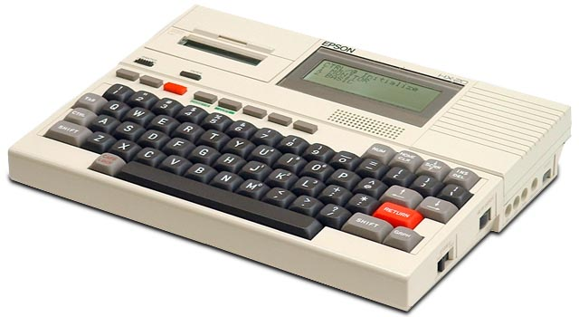

The Notebook That Handed You Your Answer
The Epson HX-20 was the first notebook computer — and its defining interaction was the printer bolted into its own body, so typing, calculating, and handing over a hard copy became a single gesture.
I think the strangest thing about the Epson HX-20 is that it does not know it is the future. It is a notebook-sized computer from 1981, the first of its kind, and it does the things computers of its era were learning to do — it types, it runs BASIC, it remembers. But it is also a printer, and it is a printer in the way a bird is a beak: not carrying a printer, but built around the idea of one. And that changes what the machine is for.
Epson was a printer company before it was anything else. The name itself comes from "Son of Electronic Printer," the EP-101 of 1968. So when Suwa Seikosha set out in 1980 to make a portable computer, the printer was not an accessory they added later — it was the reason for the machine's existence. They embedded their own core competency into the chassis: a calculator-sized dot-matrix thermal microprinter, sitting in a recessed bay at the rear, printing 24 characters at a time onto thermal roll paper. In BASIC you reached it with a single command: LPRINT. That was the whole point.

Now think about what that means as an interaction, not a feature list. Every computer in the museum separates input from output the way a conversation separates speaking from listening. You type into a keyboard, and the answer appears on a screen a foot away, in a different medium, a different surface, a different organ of the machine. The HX-20 does not work that way. On the HX-20, input and output happen in the same gesture, in the same breath, through the same object.
The operator it was built for was a field engineer or a route accountant — someone who worked where there was no desk and no wall to plug a CRT into. Here is the workflow BYTE magazine described in September 1983: a data collector on a delivery route would log entries on the keyboard, run a calculation, and then — on the spot — produce an invoice, a receipt, a data-collection summary, a piece of paper they could hand to a customer or file away and mail to the office. Three separate steps that on any other computer were split across two rooms and three devices — record the data, carry it back, print the invoice — collapsed into a single continuous interaction. The answer did not appear somewhere else. The machine handed it to you.
This is a radically different idea about what a computer is for, and it is one we quietly stopped believing. We decided screens were the natural output and that paper was an optional export. But for the people the HX-20 was built for, the paper was not the export — it was the product. The receipt was the output, the reason the machine existed at all. A computer that prints is a computer that produces things you can hand to another human being. That is a different contract with the user than a computer that shows you things.
It is also worth remembering how much this mattered as a choice about the future. The HX-20 ran on dual Hitachi 6301 CPUs with 16 KB of RAM and a microcassette drive, and it came in a case with spare thermal paper rolls. It could carry on a conversation with a mainframe through an optional acoustic coupler, and it could read barcodes. It was a complete field terminal in a 3.5-pound briefcase. And it established the notebook form factor itself — every clamshell laptop since inherits its proportions. But the printer, the thing that made it strange, did not inherit. The laptop closed over that idea the way the notebook's lid closes over its keyboard.
The HX-20 was a printer company's vision of the computer, and it is a beautiful one: not a window you look through, but a device that gives you a thing you can hold. The Commodore 1520 plotter in this museum performs its output as theater, in public, for an audience. The Sony Typecorder treats output as a ritual you perform to move text around. The HX-20 does something humbler and stranger — it makes output invisible by making it instantaneous, the way speech is. You type, you get your answer, and it is already in your hand. No screen in between. No waiting. No translation.
We spent the next forty years building computers that want to be the place where things happen. The HX-20 was content to be the place where something got done — and then to hand you the proof.